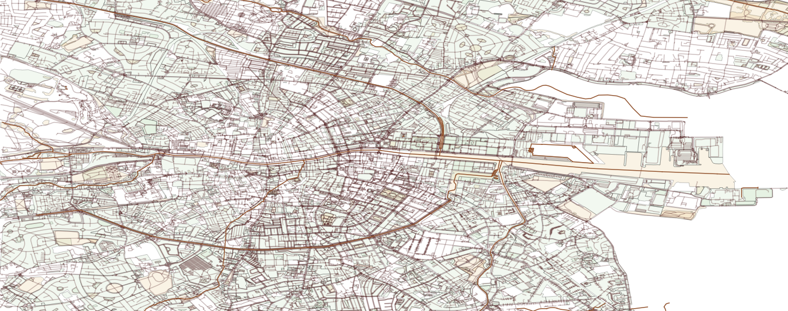

Dublin Events

Fidelity Bar & Studio
Lucky's Bar
Fidelity Bar & Studio
Shows:
• Sept. 25th, 2024: Afro-Disco, Afro-Funk, Tropical Funk
• Nov. 15th, 2024: Afro-House, Afro-Latin, Tropical House
• Dec. 5th, 2024: Reggae, Dub, Dancehall, Afrofusion
• June 21st, 2025: Dub, Dancehall, Bass, Drum & Bass
• Aug. 2nd, 2025: Reggaeton, Dancehall, Baile Funk
• Nov. 15th, 2024: Afro-House, Afro-Latin, Tropical House
• Dec. 5th, 2024: Reggae, Dub, Dancehall, Afrofusion
• June 21st, 2025: Dub, Dancehall, Bass, Drum & Bass
• Aug. 2nd, 2025: Reggaeton, Dancehall, Baile Funk
Upcoming Shows:
• June. 21st, 2025: TBD
Lucky's
Shows:
• Feb 8th, 2025: Reggae, Dub, Dancehall, Reggaeton
• June 20th, 2025: Dancehall, Old School Hip-Hop, Bass, Drum & Bass
• Aug. 1st, 2025: Dancehall, Baile Funk, Afrobeat, Latin House
• June 20th, 2025: Dancehall, Old School Hip-Hop, Bass, Drum & Bass
• Aug. 1st, 2025: Dancehall, Baile Funk, Afrobeat, Latin House
Upcoming Shows:
• June. 21st, 2025: TBD